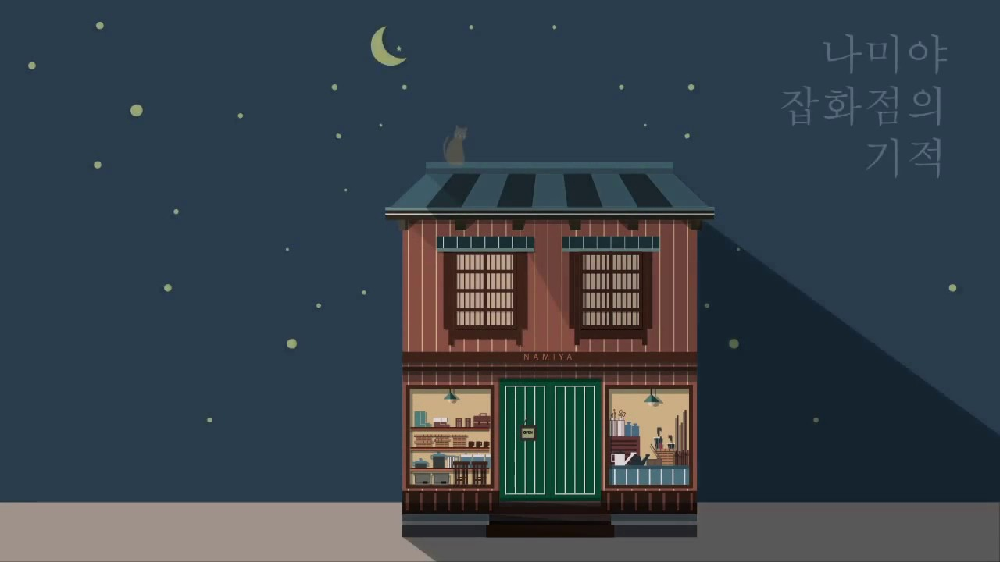

고민상담 나미야 잡화점

오른쪽 아래에 있는 온라인 채팅창에
자신의 고민을 적어 보내면 개발자가 직접 고민을
들어 주고 최선의 해결방안을 마련해 주겠습니다.
해결방안은 다음날 아침에 다시 웹사이트에 와보시면 도착해 있을 것 입니다!
나미야잡화점은 고민을 상담하여 주는 가게 입니다. 여러분의 고민을 상담하여 주세요.
채팅 버튼을 누르면 이름, 이메일, 고민을 적는 칸이 있는데 이름칸에 꼭 자신의 이름을 적어주세요.
상담내용은 예를 들어 공부상담, 연애상담, 친구상담등 모든 상담이 가능합니다
나미야 잡화점의 기적 책소개 보러가기
*본 웹사이트는 나미야 잡화점이라는 고민 상담소의 모티브를 따서 만들어졌음을 알립니다!